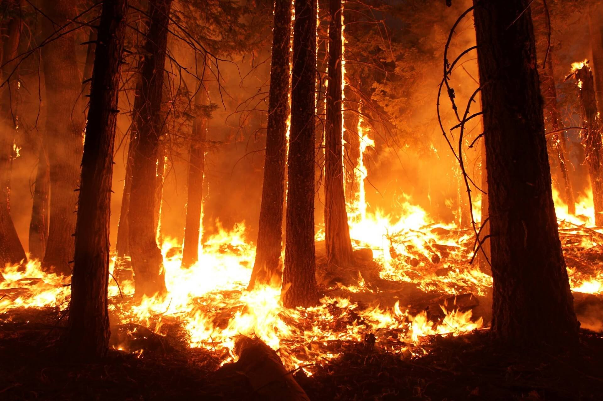
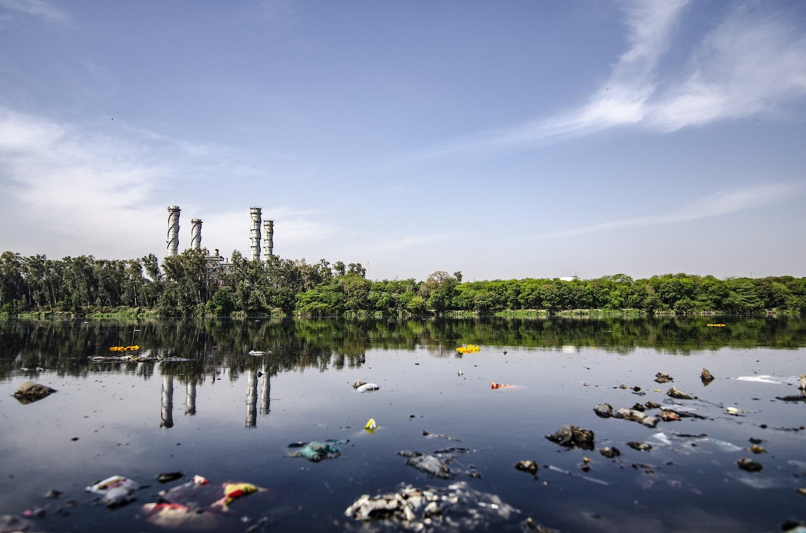

En la actualidad una de las más grandes preocupaciones de la sociedad es el cuidado y preservación del medio ambiente, con el fin de remediar los daños que el hombre ha causado y evitar que este se siga deteriorando, ya que esto directa e indirectamente afecta la salud y el bienestar de las personas y de los otros organismos. La contaminación ambiental es la introducción de sustancias u otros elementos físicos en un medio, que provocan que este sea inseguro o no apto para su uso. El contaminante puede ser una sustancia química o energía (como sonido, calor, luz o radiactividad). Es siempre una alteración negativa del estado natural del medio ambiente y, por lo general, se produce como consecuencia de la actividad humana considerándose una forma de impacto ambiental.
La contaminación puede ser, en general, de dos tipos:
Natural: causada por fenómenos como los incendios forestales, las erupciones volcánicas, los tsunamis o los terremotos.

Artificial: provocada por la actividad del ser humano. Como por la interrupción de los ciclos naturales del ecosistema, el mal uso de los recursos naturales o la mala gestión de los residuos.

¿Cuáles son las causas de la contaminación ambiental?
Estas se producen como consecuencia del aumento de la población humana y del incontrolable desarrollo industrial. Se provoca un desequilibrio en el medio ambiente ante la presencia de agentes contaminantes físicos, químicos o biológicos:
Contaminantes químicos: proceden de la industria química donde se generan productos tóxicos como ácidos, disolventes orgánicos, plásticos, derivados de petróleo, abonos sintéticos y pesticidas.
Contaminantes físicos: provienen de acciones causadas por la actividad del ser humano como el ruido, la radioactividad, el calor y la energía electromagnética.
Contaminantes biológicos: provocados por la descomposición y la fermentación de los desechos orgánicos como excrementos, serrín de la industria forestal, papel, desperdicios de las fábricas o los desagües.
Todos estos contaminantes marcan las causas de la contaminación ambiental en cualquier entorno; sin embargo, las causas y factores se especifican dependiendo de si afectan al agua, al aire o al suelo.
Causas de la contaminación del agua
El agua está contaminada cuando su composición se ha visto alterada de tal modo que no reúne las condiciones necesarias para ser utilizada de manera beneficiosa para el consumo.
Dentro de las causas de la contaminación ambiental, la alteración del agua por agentes contaminantes es muy grave dada la importancia del agua para la vida del planeta. Los principales factores contaminantes del agua son:
El vertido directo de contaminantes en el agua: Como pueden ser desechos de producción industrial, plásticos y basura. El problema de los microplásticos, de hecho, es cada vez mayor y, al parecer, hemos subestimado la cantidad que hay en nuestros océanos. De hecho, algunos estudios sugieren que hay hasta un millón de veces más de lo que pensábamos.
El calentamiento global: Que altera el equilibrio de los océanos. Uno de los efectos principales es la pérdida de oxígeno en ese agua. Esto cambia completamente los ecosistemas, produce desaparición de especies, desplazamiento de otras que acaban con especies autóctonas, etc.
Deforestación de los bosques: Esto provoca varios efectos negativos. El principal es la aparición de sedimentos y bacterias en el agua arrastrada por ríos y océanos (debido a que los árboles no realizan su labor equilibradora, al no estar) y que contaminan el agua.
Pesticidas agrícolas: Estos pesticidas se filtran por las tierras de cultivo y pueden llegar al agua subterránea, que acaba alcanzando ríos y mares con ese agua contaminada.
Tráfico marítimo: Desde desechos arrojados al agua, hasta vertidos accidentales, como los de petroleros y mercantes, provocan una contaminación directa y muy nociva del agua de los océanos.